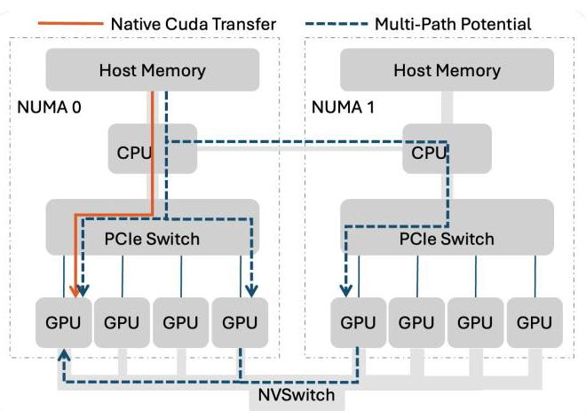
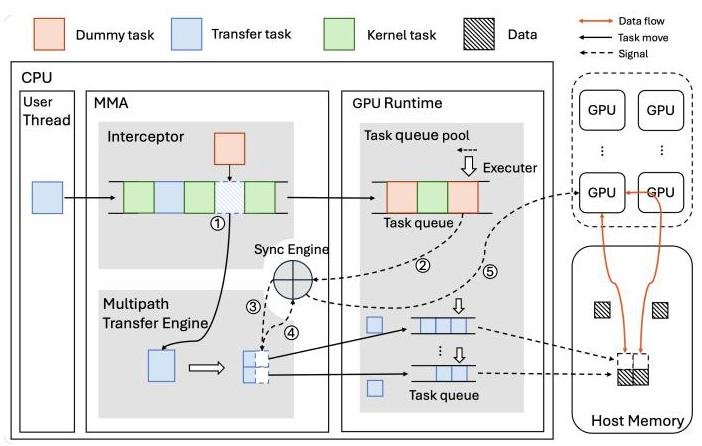
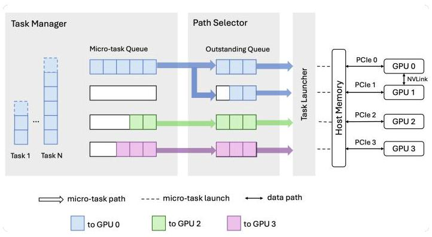
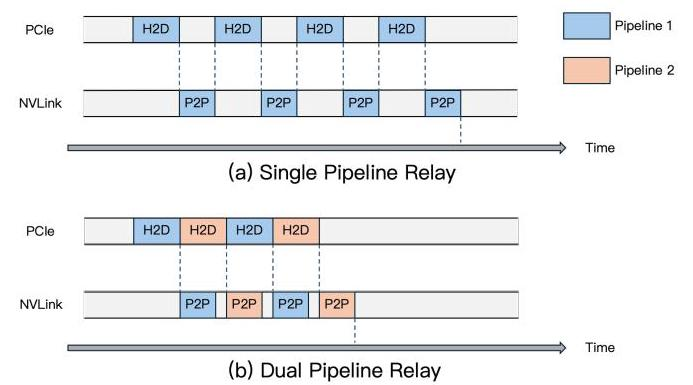
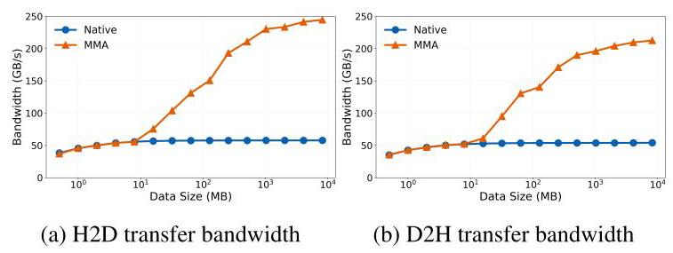
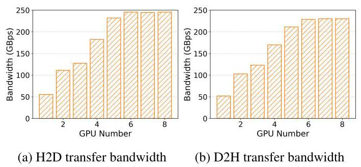
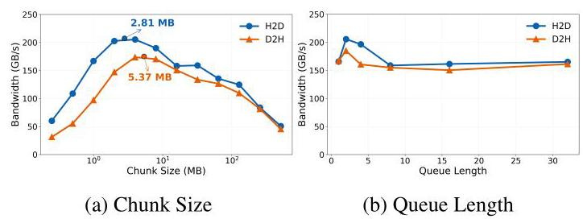
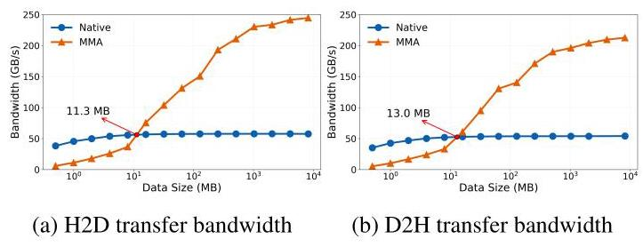
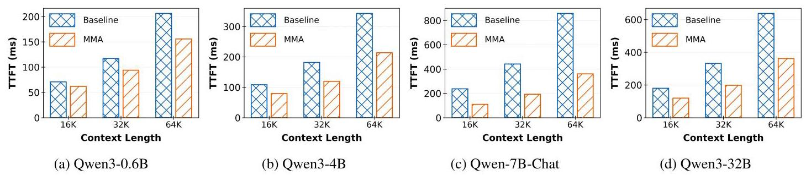
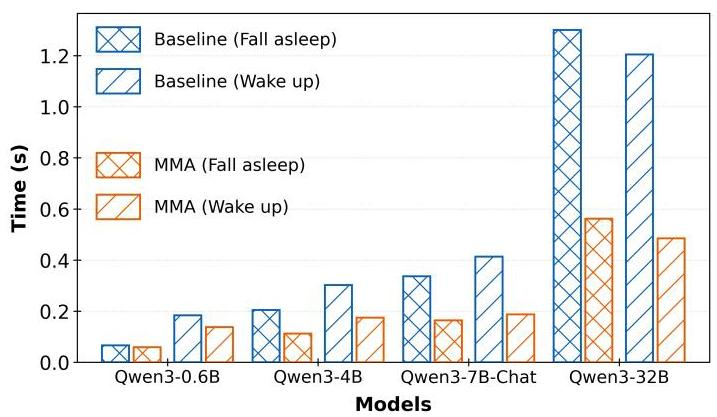

MultiPath Transfer Engine: Breaking GPU and Host-Memory Bandwidth Bottlenecks in LLM Services 深度解读
作者：Lingfeng Tang, Daoping Zhang, Junjie Chen, Peihao Huang, Feng Jin, Chengguang Xu, Yuxin Chen, Feiqiang Sun, Guo Chen 机构：Hunan University, Tencent 会议/期刊：arXiv preprint, 2025 一句话总结：这篇论文提出 Multipath Memory Access (MMA)，在不修改上层 LLM 服务代码和 GPU 硬件的前提下，用其他 GPU 的空闲 PCIe/NVLink 路径中继 host-memory 与目标 GPU 之间的大块数据传输，从而缓解 prefix cache fetching 和 model switching 中的单 PCIe 链路瓶颈。
一、问题定义
这是一篇非 First 类型的系统工作：LLM 推理中的 host-memory offloading、KV cache prefix reuse、model hot switching 已经被大量系统使用，原始问题并不是“能否把数据放到 CPU 内存”，而是当这些系统把 KV cache 或 model weights 从 GPU memory 移出再拉回时，CPU-GPU 之间的 PCIe 单链路带宽会成为新的端到端瓶颈。
论文把问题落在两个具体场景上。第一，prefix cache 命中时，系统仍需要把长上下文的 KV cache 从 host-memory 读回 GPU；作者在 LMCache+vLLM 上测到 cache fetching 最多可占 TTFT 的 70%。第二，vLLM Sleep Mode 做模型切换时，需要先把旧模型权重 D2H 迁出，再把新模型 H2D 载入；随着模型增大，数据传输可占切换延迟的 85%-95%。换句话说，在这些 workload 里，瓶颈已经不是 transformer compute，而是大块状态在 host-memory 与 GPU memory 之间搬运。

Fig. 1 展示了论文的核心观察：native CUDA transfer 只走目标 GPU 直连的 PCIe 路径，而同一台服务器里其他 GPU 的 PCIe 入口、NVSwitch/NVLink、跨 NUMA 路径仍然存在潜在带宽。这个图的重要性在于，它把“单链路瓶颈”改写成“路径选择与调度问题”：数据可以先进入某个 relay GPU，再经 NVLink 转发给目标 GPU。
动机评估：动机比较 solid。作者不仅列出硬件带宽差异，还用 TTFT、Sleep Mode、链路利用率不均衡三个层面的数据说明问题真实存在。潜在弱点是实验环境集中在 H20 + NVLink/NVSwitch 的高端服务器，MMA 的价值高度依赖“有足够多空闲 relay path”这一条件；在 GPU 数量少、NVLink 不存在或 PCIe 已经均衡占满的服务器上，收益会明显收缩。
核心 Insight：host-memory 到目标 GPU 的单 PCIe 路径虽然被软件栈静态绑定，但服务器内部实际存在一张由 PCIe、NVLink、NUMA interconnect 组成的异构 fabric。只要能在不破坏 CUDA 异步语义和 task dependency 的情况下，把大块 transfer 切成 micro-task 并动态分配到多个入口链路，就可以把“被动等待单链路搬完”变成“多个链路协同搬运”。
二、相关工作
论文的 related work 可以按三条线理解。
第一类是 CPU-GPU communication optimization，例如 multiple CUDA streams、double buffering、asynchronous copies、computation/communication overlap。这些工作试图把单条 PCIe 链路用得更满，或者把传输隐藏在计算背后；但如果 workload 本身已经 transfer dominated，并且没有足够可重叠的计算，单链路的物理带宽上限仍然存在。MMA 与这类工作的区别是目标从“优化一条路”变成“调度多条路”。
第二类是 GPU communication 和 inter-server multipath，例如 AllReduce/AllToAll 优化、多 NIC 传输、FuseLink 等。这些系统已经证明 GPU 可以参与 relay，multipath 对带宽聚合有价值。但它们通常依赖 RDMA、NIC metadata exchange 或分布式通信栈可见的控制通道。MMA 面向的是单机 host-memory 与 GPU memory 之间的 CUDA memory copy，缺少类似 RDMA 的注册和反馈机制，因此需要显式 CPU-GPU relay 与本地负载推断。
第三类是网络层 multipath 协议，如 MP-TCP、MP-RDMA。它们拥有 RTT、ACK、ECN 等拥塞信号，可以做更传统的 congestion control。PCIe/NVLink 的问题在于，上层 runtime 基本拿不到显式链路状态；MMA 因此没有照搬网络协议，而是用 outstanding queue 的阻塞状态作为被动拥塞代理。
三、技术挑战
挑战 1：CPU 静态入队后，传输路径很难动态改变。 CUDA 异步模型下，CPU 把 memcpy task 提交到 GPU runtime 后就继续执行；真正执行 transfer 时，系统内链路拥塞状态可能已经变化。如果强行让 CPU 在运行时频繁同步再决策，会引入 CPU-GPU stall；如果让 GPU 自己做 multipath，又需要目前商用 GPU 不提供的硬件/driver 支持。
挑战 2：multipath 不能破坏 GPU task dependency。 原始 CUDA stream 中，后续 kernel 或 copy 依赖前面的 transfer 完成。MMA 如果在中间层拦截真实 transfer、替换成 dummy task，GPU runtime 看到的依赖对象就变了；如果 dummy task 与真实 transfer 的生命周期不同步，后续任务可能提前执行，导致语义错误。
挑战 3：PCIe/NVLink 缺乏显式拥塞反馈。 数据中心网络能用 RTT/ECN/ACK 判断路径状态，而 intra-server DMA 没有等价机制。静态 1:1 或 1:2 分流只在某些固定负载下有效，一旦 background traffic 变化就会造成某条路径拥塞、另一条路径空闲。
挑战 4：透明部署与小传输开销之间存在张力。 论文希望通过 LD_PRELOAD 拦截 CUDA memory API，让 LLM 应用无需改代码受益。但 multipath 需要切块、调度、同步、relay buffer 和额外线程；对于小块 copy，这些控制开销可能超过带宽收益。
四、解决方案
整体思路
MMA 是一个 CUDA 用户态动态库，核心做法是拦截 H2D/D2H transfer，把上层提交的真实 transfer task 留在自己的 Multipath Transfer Engine 里，同时向 GPU runtime 提交一个占位的 Dummy Task。等 GPU 执行到 Dummy Task 时，Sync Engine 通知 Transfer Engine 按当前链路状况启动真实 multipath transfer；真实 transfer 完成后，Sync Engine 再释放 Dummy Task，使后续 CUDA stream 任务继续执行。

Fig. 5 把这条控制链画得很清楚：Interceptor 负责替换任务，Sync Engine 负责把 dummy task 的生命周期和真实 transfer 对齐，Multipath Transfer Engine 负责把数据切块并发到不同路径。这个设计的关键不是“多开几个 memcpy”，而是重新拿回异步 transfer 的执行时机，让调度决策发生在 GPU 即将需要该数据的时刻。
贯穿示例
可以把一次 17.5 GB 的 Qwen-7B-Chat 64K prefix KV cache 读取想成一个大包裹要从 host-memory 送到 GPU0。native CUDA 的做法是让包裹全部排队通过 GPU0 直连 PCIe，就像只有一个货梯可用。MMA 则先把包裹拆成若干 5 MB 左右的小箱子：一部分仍然走 GPU0 直连 PCIe，另一部分先通过 GPU1/GPU2/GPU3 的 PCIe 进入对应 GPU，再经 NVLink 转发到 GPU0。Dummy Task 像一个门禁牌，保证 GPU0 后面的 kernel 只有在所有小箱子都到齐后才放行。
关键技术点
Transfer Task Interceptor 解决“何时重新调度”的问题。它通过拦截 CUDA transfer API，把真实 transfer 暂存在 MMA 内部队列中，把 Dummy Task 提交给原 CUDA stream。这样，原程序仍然看到一个合法的异步任务序列，而 MMA 可以把真实传输推迟到 Dummy Task 被执行时再按实时状态拆分和发送。为避免小任务得不偿失，Interceptor 还提供 Fallback Mechanism：低于阈值的数据继续走 native single-path transfer。
Sync Engine 解决“语义如何保持”的问题。它利用 CUDA callback 接收 Dummy Task 到达信号，并启动一个 spin kernel 维持 Dummy Task 的占位生命周期。真实 multipath transfer 完成后，CPU 侧更新 Unified Memory/zero-copy 共享 flag，GPU 侧 spin kernel 观察到 flag 后退出，Dummy Task 才算完成。这个机制的本质是用现有 runtime 接口模拟“真实 transfer 与占位任务绑定”的语义。

Fig. 6 展示了 Transfer Engine 的数据面：Task Manager 把大 transfer 切成 micro-task，按目标 GPU 放入 Micro-task Queue；Path Selector 维护与各 PCIe 链路绑定的 Outstanding Queue；Task Launcher 根据 direct path 或 relay path 发起具体 H2D/D2H/P2P 操作。图中的 outstanding queue 是理解 MMA load balancing 的核心，因为它既是发送窗口，也是链路拥塞的被动观测点。
Path Selector 解决“无显式链路状态如何负载均衡”的问题。每条 PCIe link 对应一个 outstanding queue。如果某条链路拥塞，PCIe/NVLink 自身流控会让该 queue 头部 micro-task 完成变慢，该 queue 也就更少从 micro-task queue 拉取新任务；不拥塞的链路则持续消费任务。MMA 不主动探测拥塞，而是让各路径以 pull-based 方式竞争 micro-task，从完成速率自然反映可用带宽。
Direct Path First 降低 relay 额外成本。relay path 会额外消耗 NVLink/P2P 带宽，所以 MMA 让目标 GPU 的直连 PCIe queue 优先消费自己的任务，只有当其他路径有空闲且能带来净收益时才使用 relay。Table 2 的结果显示，启用 direct priority 时 P2P bandwidth 几乎保持在 367 GB/s，与无 transfer 的 P2P_alone 接近；禁用后则降到约 330 GB/s，说明盲目 relay 会污染 GPU-GPU 通信带宽。

Fig. 7 对比了 single-pipeline 和 dual-pipeline relay。relay path 至少包含 host-memory 到 relay GPU 的 H2D/D2H 以及 GPU 间 P2P 两段，如果串行执行会出现一段链路等待另一段链路的气泡。MMA 为每个 GPU 加两条 relay stream 和对应 relay buffer，使两段链路流水化；论文给出的典型配置中，5 MB chunk、双向、双流水线带来的 GPU memory overhead 约为 20 MB。
与已有关方案的对比
MMA 相比单链路优化的优势是可突破单 PCIe 链路上限，尤其适合数百 MB 到数十 GB 的 LLM 状态搬运；相比 inter-server multipath，它工作在单机 CUDA memory copy 语义下，不依赖 RDMA 控制通道；相比静态分流，它能随 background traffic 的变化自适应调整。它的不足也很明确：控制面依赖 CPU 线程，细粒度 transfer 容易被同步和调度开销吞掉，且需要服务器内部确实存在空闲 relay path。
五、实验评估
实验设定
作者在 AMD EPYC 9654 CPU + 8 张 NVIDIA H20 GPU 的服务器上评估 MMA。GPU 通过 18-lane NVLink/NVSwitch 互联，GPU 与 CPU complex 之间是 PCIe 5.0。实现基于 CUDA 12.8，约 3000 行 C++，以用户态 shared library 拦截 CUDA H2D/D2H calls。主要 baseline 是 native CUDA memory copy，静态绑定单条 PCIe 路径。评估分为 microbenchmark、robustness/load balancing、deep dive，以及两个 LLM serving end-to-end workload：prefix cache prefill 和 vLLM Sleep Mode model switching。
主要实验与结论

Fig. 8 显示 MMA 在约 10 MB 以后开始超过 native transfer，并在约 1 GB 后接近 245 GB/s 峰值；native 单链路则稳定在约 53 GB/s。这个结果对应 4.62x 峰值带宽提升，也解释了为什么 MMA 需要 fallback：小于十几 MB 的传输中，切块和同步开销可能让 MMA 反而慢。

Fig. 9 说明带宽随参与 GPU/path 数增长，在约 6 个路径后饱和。作者给出的解释是，单 NUMA 内通常有 4 个 GPU，跨 NUMA relay 需要经过 UPI/Infinity Fabric，后者成为新的瓶颈。这一结果提醒我们，MMA 的“多路径”并不意味着路径越多越好，拓扑边界会把瓶颈转移到 CPU interconnect。
在 robustness 实验中，MMA 与 native CUDA traffic 共存时，拥塞链路上两者会近似公平分享带宽，非拥塞链路的 MMA 带宽基本不受影响；两个 MMA flow 并发时也能共享总带宽。与静态 1:1、1:2 分流相比，MMA 在有无 background traffic 两种条件下都更接近最优完成时间，说明 outstanding queue 的被动反馈确实能适应动态链路状态。

Fig. 13 是 deep dive 里最有工程价值的图。H2D 最优 chunk size 约为 2.81 MB，D2H 约为 5.37 MB；queue length 为 2 时两类传输表现最好。太小的 chunk 会放大调度开销，太大的 chunk 会降低负载均衡粒度；queue length 太长同样让调度变粗，太短则让链路在等待下一块入队时空转。

Fig. 14 给出 H2D 与 D2H 的 fallback break-even threshold，分别约为 11.3 MB 和 13.0 MB。在论文的 5 MB chunk 设置下，合理阈值大约落在 2 到 5 个 chunk 之间。这说明 MMA 的收益边界不是抽象的“传输越大越好”，而是可以通过 microbenchmark 为具体机器标定。
MMA 的 CPU 开销是一个明显代价。论文报告当扩展到 8 个 GPU 时，额外 CPU overhead 峰值达到 822%，原因是每个 GPU 需要 transfer thread 和 synchronization thread。不过作者认为 LLM serving 中 GPU 通常重载、CPU 相对空闲，因此该开销可接受。这个判断在离线推理或 GPU-bound 服务上更成立；在 CPU 也承担 tokenizer、scheduler、networking 或多租户控制面的部署中，需要更谨慎评估。

Fig. 15 是端到端结果之一。作者在 LMCache+vLLM prefill-decode disaggregation 下测试 Qwen2.5-7B-Instruct、Qwen3-4B、Qwen-7B-Chat、Qwen3-32B 以及 16K/32K/64K context。MMA 在所有组合中降低 TTFT，整体 speedup 为 1.14x-2.38x；最长 context 和较大 KV cache 的场景收益最大。论文特别指出 Qwen-7B-Chat 64K 的单请求 KV cache 可达 17.5 GB，此时 TTFT 更受 transfer 支配。

Fig. 16 是另一个端到端结果。对 Qwen3-0.6B、Qwen3-4B、Qwen-7B-Chat、Qwen3-32B，MMA 都降低 fall-asleep 和 wake-up 时间；在 Qwen3-32B 上，fall-asleep 降低约 56.8%，wake-up 降低约 59.7%，相当于约 2.32x-2.48x 加速。这个实验很好地支撑了论文主张：当 model switching 本质上是大规模 D2H/H2D 权重搬运时，增加有效 PCIe 聚合带宽能直接缩短切换延迟。
结论支撑性分析
实验总体能支撑“在大块、transfer-dominated、链路不均衡的 LLM 服务场景中，MMA 可以显著提升 host-memory 与 GPU 间有效带宽并改善端到端延迟”这一主张。microbenchmark 证明带宽上限，load-balancing 实验证明动态调度优于静态分流，end-to-end 实验证明收益能传导到 TTFT 和 model switching latency。
但实验覆盖仍有边界。第一，主要硬件是单一 H20/NVLink/NVSwitch 平台，缺少 A100/H100/H200、PCIe-only、多 NUMA 配置差异的横向比较。第二，CPU overhead 虽被测量，但没有展示在真实 vLLM 高并发服务中与 tokenizer、scheduler、RPC 线程竞争时的影响。第三，MMA 以动态库注入方式承诺透明部署，但论文没有深入讨论 CUDA Graph、framework memory allocator、multi-process service、MIG 或容器隔离下的兼容性细节。
六、附加洞察
结论 1：MMA 的收益边界主要由 transfer granularity 决定，而不是由“是否使用 multipath”这个二元选择决定。 出处：Section 5.1.1 与 5.1.3，Fig. 8、Fig. 13、Fig. 14。 推理链条：作者先观察到小于约 10 MB 时 MMA 没有稳定超过 native，再通过 chunk-size/queue-length 实验发现过小 chunk 会放大调度开销、过大 chunk 会降低负载均衡粒度，最后用 fallback threshold 实验给出 H2D 11.3 MB、D2H 13.0 MB 的 break-even 点。因此，MMA 的工程落地需要按机器标定阈值，而不是简单替换所有 CUDA memcpy。
结论 2：direct priority 的价值在于保护 NVLink，而不只是提高当前 transfer 的带宽。 出处：Section 3.4.2 与 Table 2。 推理链条：relay path 会消耗 GPU P2P/NVLink 带宽；如果不优先走 direct path，空闲链路可能过度吸收 relay 任务，挤占其他 GPU-GPU 通信。Table 2 显示 MMA 启用 direct priority 时 P2P bandwidth 为 367.28 GB/s，几乎等于 P2P_alone 的 367.60 GB/s；禁用后下降到 330.56 GB/s。因此 direct priority 不只是一个局部优化，而是让 multipath 与正常 GPU-GPU 通信共存的保护机制。
结论 3：MMA 把瓶颈从目标 GPU 的 PCIe 链路转移到更高层的服务器内部 fabric。 出处：Section 5.1.1，Fig. 9。 推理链条：随着参与 GPU 数增加，带宽从单链路水平提升到 200+ GB/s，但到约 6 个 GPU 后饱和；作者将其归因于跨 NUMA relay 对 UPI/Infinity Fabric 的依赖。这个结果说明 MMA 成功绕开了目标 PCIe 单链路，但系统总瓶颈不会消失，只会迁移到 NUMA interconnect、NVLink 或 memory bandwidth。
结论 4：CPU 驱动控制面是当前硬件约束下的务实选择，但也是 MMA 的主要可扩展性风险。 出处：Section 4、Section 5.1.3、Section 6。 推理链条：现有 GPU 硬件/driver 不支持 GPU 侧 multipath 调度，所以 MMA 用 CPU 线程管理 outstanding queue 和 CUDA event synchronization；实验显示 8 GPU 时 CPU overhead 峰值达到 822%；discussion 又指出未来可以借鉴 ARK 或 CUDA 12.8 batch memory copy，把部分控制逻辑转移到 GPU 或批量接口中。因此当前软件实现验证了方向，但长期更理想的是硬件或 runtime 原生支持 multipath scheduling primitives。
七、总结与评价
MMA 的核心贡献是把单机内 host-memory 与 GPU memory 的数据搬运显式建模为异构多路径调度问题，并用 Dummy Task + Sync Engine 在不修改应用代码和 GPU 硬件的前提下维持 CUDA 异步依赖语义。它最亮眼的地方是工程切入点很准：不是重新设计 LLM serving framework，而是在 CUDA memory transfer 层扩展可用带宽，因此 prefix cache 和 model switching 这类 transfer-dominated 路径能直接受益。
这篇论文最大的不足是适用性边界需要更多平台和真实生产负载验证。MMA 依赖空闲 PCIe/NVLink/NUMA path，也依赖 CPU 有足够控制面余量；在复杂多租户服务、CPU 同样繁忙、或者 GPU-GPU traffic 已经重的场景里，它可能需要更精细的限流、优先级和隔离策略。后续值得探索的方向包括 GPU-driven control plane、与 CUDA Graph/allocator 的兼容、面向多租户的路径配额，以及硬件/runtime 原生 multipath API。
八、章节脉络与段落速览
- Abstract：概述 PCIe 单链路限制、MMA 的 multipath memory access 思路、透明部署方式与主要性能结果。
-
¶1 说明 PCIe 已成为 prefix cache fetching 和 model switching 的关键瓶颈，并给出 MMA 的 peak bandwidth、TTFT 和 model switching speedup。
-
Section 1 · Introduction：从 LLM offloading 场景引出 PCIe 瓶颈，说明服务器内部存在未利用的多路径带宽，并概括 MMA 的挑战、设计和贡献。
- ¶1 说明 GPU memory 容量不足使模型权重和 prefix cache offloading 成为常态。
- ¶2 用 TTFT 和 Sleep Mode 数据指出 PCIe transfer 已主导端到端延迟。
- ¶3 结合 Fig. 1 和 Table 1 说明除目标 PCIe 外，NVLink、NVSwitch、NUMA route 等路径仍有可用带宽。
- ¶4-6 合并概括三类挑战：动态发起 multipath、无链路状态下分配流量、透明集成并处理 GPU relay 的软件栈限制。
- ¶7 提出 MMA 的三个核心设计：Dummy Task 同步、congestion-aware routing、fallback 与 dual-pipeline relay。
-
¶8-9 给出 CUDA 12.8 原型、H20 实验结果和三点贡献。
-
Section 2 · Background and Motivation：证明 host-memory 与 GPU 之间的大块传输在 LLM 服务中真实存在且负载不均衡，并把这些观察转化为设计挑战。
- 2.1 · The Necessity to Accelerate GPU-to-Host Memory transfer：通过 prefix cache 和 Sleep Mode 说明数据传输分别可占 TTFT 70% 和 model switching 85%-95%。
- 2.2 · Need for multipath memory access：说明多 GPU 服务器物理上具备 relay 条件，且 LLM PCIe traffic 在时间和链路上高度不均衡。
-
2.3 · Multipath memory access challenges：逐项提出动态任务转发、依赖保持、无显式链路状态负载均衡三项挑战，并给出 MMA intuition。
-
Section 3 · MMA Design：系统描述 Interceptor、Sync Engine、Transfer Engine 如何共同完成透明 multipath transfer。
- 3.1 · Overview：解释 MMA 将 GPU 作为 relay node，把静态单路径路由变成动态 multipath transfer，并给出 Fig. 5 的五步流程。
- 3.2 · Transfer Task Interceptor：说明为什么 CPU 入队后的异步 task 难以重调度，以及 Dummy Task 与 fallback mechanism 如何解决透明性和小任务开销问题。
- 3.3 · Sync Engine：说明 Dummy Task 替换真实 transfer 后如何用 CUDA callback、spin kernel 和 Unified Memory flag 保持 dependency correctness。
- 3.4 · Multipath Transfer Engine：介绍 Task Manager、Path Selector、Task Launcher 三个子模块。
- 3.4.1 · Task Manager：描述如何把大 transfer 切成 micro-task，按目标 GPU 组织队列，并用 chunk size 控制调度粒度。
- 3.4.2 · Path Selecter：描述 outstanding queue 如何作为被动拥塞信号，并讨论 direct path first、relay scheduling、background contention 策略。
-
3.4.3 · Task Launcher：描述 direct task 与 relay task 的具体 CUDA 操作，以及 dual-pipeline relay 如何提高 PCIe/NVLink 利用率。
-
Section 4 · Implementation：说明 MMA 的 CUDA 12.8 用户态实现、线程模型和 spin kernel 机制。
- ¶1 说明 MMA 以 3000+ 行 C++ 实现，并通过
LD_PRELOAD替换 native CUDA memory API。 - ¶2-4 描述每个 GPU 两类线程：transfer thread 拉取并发射任务，synchronization thread 等待 CUDA event 并维护 outstanding queue。
-
¶5 描述 spin kernel 如何通过 host/device 共享 flag 让 Dummy Task 等待真实 transfer 完成。
-
Section 5 · Evaluation：通过 microbenchmark、负载均衡 deep dive 和端到端 LLM workload 验证 MMA。
- ¶1-2 给出 H20/NVLink/NVSwitch/PCIe 5.0 testbed 和 native CUDA baseline。
- 5.1.1 · Bandwidth improvement：显示 MMA 在大块 H2D/D2H 上达到约 245 GB/s 和 4.62x 峰值提升，并在 6 个路径后受跨 NUMA 限制饱和。
- 5.1.2 · Robustness and Load Balancing：显示 MMA 与 native traffic 或另一个 MMA flow 共存时能公平共享带宽，并优于静态分流。
- 5.1.3 · Deep Dive：分析 direct priority、chunk size、queue length、fallback threshold 与 CPU overhead 的工程取舍。
- 5.2.1 · Prefix cache prefill：在 LMCache+vLLM 上展示 16K/32K/64K prefix cache 场景中 TTFT 提升 1.14x-2.38x。
-
5.2.2 · Model switching with sleep mode：在 vLLM Sleep Mode 上展示 Qwen 系列模型 fall-asleep/wake-up latency 提升 1.12x-2.48x。
-
Section 6 · Discussion and Limitations：界定 MMA 适用范围和控制面限制。
- ¶1 说明 MMA 主要适合单机 PCIe link load-imbalanced 的 intra-server data transfer。
- ¶2 将 MMA 放到异构 accelerator 和 intra-server interconnect 趋势下，强调其作为通用 multipath transport 的第一步意义。
-
¶3 承认 CPU-driven control plane 对细粒度 transfer 有开销，并讨论 GPU-driven communication、batch memory copy 和硬件原生 primitive 的未来方向。
-
Section 7 · Related Work：把 MMA 与单链路 CPU-GPU 优化、GPU/inter-server multipath、网络层 multipath 协议区分开。
- ¶1 说明现有 CPU-GPU optimization 主要优化单 PCIe link，而 MMA 试图协调所有可用 link。
- ¶2 对比 FuseLink 等 GPU relay 工作，指出 MMA 面向单机 host-device transfer 且缺少 RDMA 控制通道。
-
¶3 对比 MP-TCP/MP-RDMA，指出 intra-server DMA 缺少 RTT/ECN 等显式反馈，只能使用本地信号。
-
Section 8 · Conclusion：总结 MMA 是首个 host-memory 与 GPU 间的 multipath data transfer scheme，并强调 Dummy Task、CPU-GPU 同步与 passive load balancing 的组合价值。
- ¶1 概括 MMA 的设计与实验结论，强调其可加速 LLM serving 和 model switching。